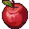

Consignes
Récolte le plus de pommes possible !

Pomme rouge: +1

Pomme dorée: +10

Pomme pourrie: -5 (et -1 vie)
Temps imparti: 30 secondes
Attention: si un pigeon apparaît crie pour le faire fuir !
Micro non configuré